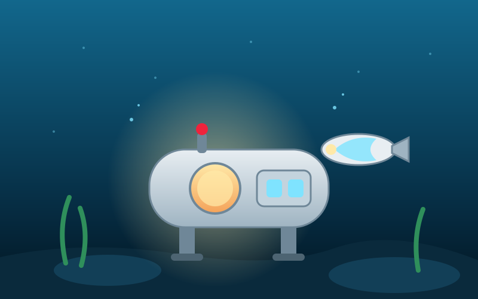

A progressão do jogo depende de construir equipamento com os materiais coletados. Cada avanço abre uma faixa de profundidade nova.
- Cápsula de escape: ponto de partida, energia e comunicação.
- Seamoth: veículo leve para as primeiras centenas de metros.
- Prawn Suit: traje mecânico para minerar e caminhar no fundo.
- Ciclo de energia: painéis solares na superfície e energia térmica no fundo.